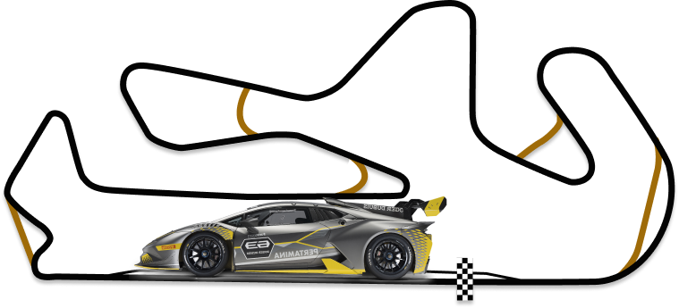

LADA GRANTA 2023
Теперь ближе к вам Старт продаж - 3-6 ноября
Тольятти, Россия

Информация о Lada Granta
семейство переименованных моделей российских переднеприводных автомобилей малого класса Волжского автомобильного завода, ранее носивших название «Лада Калина», выпускаемых с 2011 г. Первоначально семейство состояло из упрощённого, удешевлённого, отделённого от семейства «Калина» кузова типа седан и созданного на его основе кузова лифтбек, а с 2018 года — также включает в себя все остальные типы кузовов семейства «Калина». Выпуск начался 16 мая 2011 года, продажи — в конце декабря 2011 года.
LADA Granta — первый автомобиль АвтоВАЗа, на который автоматическая коробка передач устанавливается серийно на конвейере. Это четырёхдиапазонный автомат японской фирмы Jatco, разработанный на базе модели JF414E, производящейся в Японии с конца 80-х годов.LADA Granta Liftback
В марте 2013 года был официально представлен вариант с кузовом лифтбек. Кроме формы кузова, он отличается от седана передним бампером, формой задних боковых дверей, расположением заднего номерного знака. 14 мая 2014 года на предприятии «Иж-Авто» начался серийный выпуск этой модификации «Гранты» (внутризаводское обозначение автомобиля — ВАЗ-2191). Новинка, которая ранее называлась представителями «АвтоВАЗа» хэтчбеком, теперь будет продаваться как LADA Granta Liftback. Объём производства в 2014 году составил 47 тысяч автомобилей. Продажи новинки стартовали в июне.
LADA Granta Sport была представлена в 2011 году одновременно со стартом гоночного Кубка LADA Granta. Из особенностей версии: 16-дюймовые литые диски, низкопрофильные шины «Yokohama», передние и задние тормозные диски увеличенного диаметра, уменьшенный на 20 мм дорожный просвет и газонаполненные амортизаторы.
Технические характеристики машины Lada Granta 2023
Производство обновлённой LADA Granta началось 14 августа 2018 года. Премьера состоялась 29 августа 2018 года на Московском международном автосалоне. Платформа модели осталась прежней, а количество изменений свойственно для рестайлинга, поэтому ряд ведущих автомобильных изданий России называет проведение обновления модели именно рестайлингом, а не новым поколением.
| Тип кузова: | Стандарт | четырёхдверный седан |
| Число мест: | Норма | 5 |
| Этап 3: | Мизано (Италия) | 1–3 июля |
| Длина, мм: | Норма | 4260 |
| Ширина, мм: | Стандарт | 1700 |
| База, мм: | Люкс | 2476 |
| Высота, мм: | Люкс | 1500 |
Влияние санкций
Из-за нехватки импортных комплектующих, возникшей в результате санкций, автомобили выпуска 2022 года не имеют подушек безопасности. Отсутствует также антиблокировочная система тормозов, электронная система устойчивости и устройства натяжения ремней безопасности.Производство обновлённой LADA Granta началось 14 августа 2018 года.
Рестайлинг 2018 г.
Премьера состоялась 29 августа 2018 года на Московском международном автосалоне. Платформа модели осталась прежней, а количество изменений свойственно для рестайлинга, поэтому ряд ведущих автомобильных изданий России называет проведение обновления модели именно рестайлингом, а не новым поколением.
Поэтому семейство после проведённого рестайлинга получило неофициальное название LADA Granta FL (сокращение от слова Facelift). Сам завод ВАЗ именует обновлённое семейство «Новая LADA Granta»[41]. Продажи новинки начались 1 сентября 2018 года[42], 25 декабря стартовали продажи коммерческих автомобилей Lada Granta. 8 февраля 2019 года АвтоВАЗ представил учебный вариант Lada Granta, предназначенный специально для автошкол.
- ПЕРЕМЕЩЕНИЕ
- 5204 см³
- КРУТЯЩИЙ МОМЕНТ
- 60 Нм при 5200 об/мин
- МОЩНОСТЬ (л.с.) / МОЩНОСТЬ (КВТ)
- 100 л.с. при 5200 об/мин
- МАКС. СКОРОСТЬ
- 178 км /ч
- 0-100 КМ/Ч
- 12,4 с
Ощущение, важное для каждого водителя, — сесть за руль и почувствовать, что интерьер автомобиля спроектирован специально для него. О чем мечтает пассажир? Удобно устроиться в мягком кресле и расслабиться, получая удовольствие от поездки. Просторный автомобиль, стильная отделка и практичные материалы. Мультимедиа с качественным звуком. Комфортный микроклимат и прекрасная обзорность. Из множества этих деталей складывается комфорт для каждого, как в короткой поездке, так и в длительном путешествии.
Под защитой LADA Granta Благодаря проработанной силовой структуре кузова и современным системам безопасности LADA Granta выполняет жесткие требования по защите водителя, пассажиров и пешеходов. Уже в базовой версии LADA Granta оснащается подушкой безопасности водителя,3-точечными задними ремнями безопасности, сигнализатором незастегнутого ремня безопасности водителя, креплением детских удерживающих устройств (ISOFIX).
Кто-то выбирает практичность, а кто-то предпочитает дизайн с изюминкой.

БЛОГ

КАК ДЕЛАЮТСЯ МАШИНЫ LADA НА ЗАВОДЕ
Завод был построен в рекордно короткие сроки: через 3 года после начала земляных работ с конвейера сошла первая «копейка» – легендарный ВАЗ-2101, с которого и началась история бренда LADA, известного сегодня каждому. Сегодня АвтоВАЗ выпускает шесть основных семейств автомобилей LADA: LADA 4х4, LADA SAMARA, LADA PRIORA, LADA GRANTA, LADA KALINA и LADA LARGUS. Все автомобили АВТОВАЗа соответствуют международным нормам «Евро-4», а экспортируемые в страны ЕЭС – и «Евро-5». На заводе работает около 67 тысяч человек, средний возраст которых 40 лет; примерно 21 тысяча человек – молодежь до 30 лет.
читать подробнее...
Автоновости с полей Тольятти Avtograd NewsКакие то высокие гости точно посетят родной АВТОВАЗ. В конце напольного конвейера начали сооружать что-то наподобие трибуны, а так ничего существенного не происходит, собрали ещe 6 автомобилей Granta c АБС, понемногу Vesta NG сходят с конвейера, пока практически все проблемные, глючит электроника, а в остальном всe хорошо.
Владелец машины Lada Granta Сергей Карнаухов, 43 года.Обзорность Гранте досталась в наследство от первой Калины – силовая клетка кузова вместе с расположением стоек А и B осталось осталась прежней. А вот зеркала стали больше, и пусть свистят эти «лопухи» на скорости, но как мы узнаем позже, пилоту Гранты в это время отвлекаться на них недосуг. Зато видно через боковые зеркала просто замечательно.